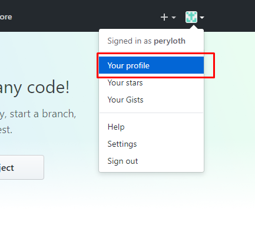

Temario
- CREAR REPOSITORIO EN GITHUB
- INICIAR REPOSITORIO A NUESTRO PROYECTO UNITY 3D
- IGNORAR DATOS INNECESARIOS
- REALIZAR EL COMMIT INICIAL
- REALIZAR EL PUSH A NUESTRO REPOSITORIO
- INSTALAR TODO LO NECESARIO PARA CONTINUAR CON PROYECTO
Para crear un repositorio en github es necesario iniciar sesión o registrarse para iniciar sesión
Después de auntenticanos nos vamos a nuestro perfil.
Estando en nuestro perfil vamos a la pestaña de Repositories del menú de Github
Estando aquí, solo deben hacer clic en el botón New ubicado en la parte derecha debajo del menú del perfil.
Lo cual nos pide un nombre de repositorio y opcionalmente una descripción.
Para el nombre del
repositorio recomiendo colocar un nombre bastante explicito. Para poder diferenciarlo de otro repositorios.
Adicional a eso acostumbrarse a colocar al final de un repositorio Unity “-unity” para que el buscador de
github pueda mostrarlo en las búsquedas.
Solo llenamos lo que es el nombre y si queremos la descripción.
Y hacemos clic en Create repository.
Con esto nos muestra la pantalla inicial de nuestro repositorio. El cual nos muestra los primeros pasos.
Y el que nos interesa es la combinación de la creación del repositorio y el de pushear un repositorio
existente.
Para iniciar nuestro repositorio debemos hacer unas configuraciones a nuestro proyecto de Unity para
que pueda ser visionado.
Primero vamos a: Edit -> Project Settings -> Editor
Aquí vamos a configurar el modo de versión de control y seleccionamos la de Visible Meta File
lo siguiente es editar el Asset Serialization a Force Test
Guardamos la Escena y con esto terminamos la configuración de Unity para comenzar a versionar.
Ahora lo importante iniciar el sistema de versionado, esto lo hacemos con:
git init
Para ignorar datos innecesarios como archivos temporales o archivos o sistemas de archivos que usa Unity utilizamos el archivo de GitIgnore. Para crear el archivo .gitignore hay varias formas:
touch .gitignoreCOPY CON .gitignore después pulsar la combinación de teclas Ctr + ZDespués de crear el archivo .gitignore es necesario modificarlo para adicionar los directorios
que no deseamos subir a nuestro repositorio remoto.
En el siguiente Script coloco todo lo necesario, es Genérico para cualquier proyecto. Pero pueden modificarlo
por si desean algo mas personalizado.
Lo importante es subir las carpetas de:
[Ll]ibrary/
[Tt]emp/
[Oo]bj/
[Bb]uild/
# Autogenerated VS/MD solution and project files
*.csproj
*.unityproj
*.sln
*.suo
*.tmp
*.user
*.userprefs
*.pidb
*.booproj
# Unity3D generated meta files
*.pidb.meta
# Unity3D Generated File On Crash Reports
sysinfo.txt
Este primer commit vamos a adicionar todos los cambios en el proyecto y hacer un commit de dichos cambios. Si desea saber mas sobre como funcionan los commit, recomiendo ir a la pagina oficial de GIT y leer un poco de ello.
Para realizar el commit es necesario antes adicionar todos los cambios con:
git add .Donde “.” indicamos que son todos los archivos que fueron modificados. Para mas información de como
se usa
git add recomiendo usar git add –-help para que arroje información de como se usa.
Después de adicionar todos los cambio, ahora si realizamos el commit con:
git commit -m “Este es un mensaje para decir en pocas palabras que se hizo en las modificaciones realizadas. Por favor sean específicos. El futuro se los agradecerá”
Con esto “versionamos” nuestro proyecto.
Para realizar el push a nuestro repositorio remoto es necesario adicionar dicho repositorio remoto, ya que
hasta ahora los cambios solo se harán de forma local.
Para eso, en la pagina del repositorio inicial nos indica como adicionar el repositorio remoto y pushear.
Ese es en mi caso. Pero estoy seguro que cada uno tendrá su propio nombre único. Eso lo remplazan por el de su repositorio.
Y eso lo escribios en nuestra linea de comandos
git remote add origin [url_a_tu_repositorio]
Y como ya hicimos el commit solo nos queda pushear
git push -u origin master
Con este comando, garantizamos que para próximas pusheadas solo sea necesario git push para
subir los cambios.
Para clonar un repositorio solo es necesario escribir el siguiente comando
git clone [url_del_repositorio_remoto]
Una vez clonado tendremos una carpeta con el nombre del repositorio y los archivos en el.
Estos son lo bajados del repositorio personal.
Para instalar el proyecto en tu Unity realizamos los siguientes pasos